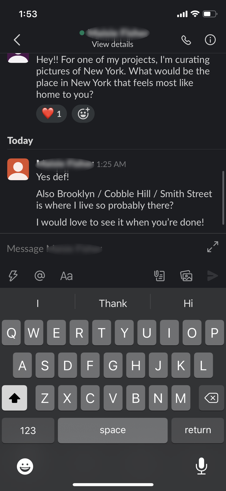
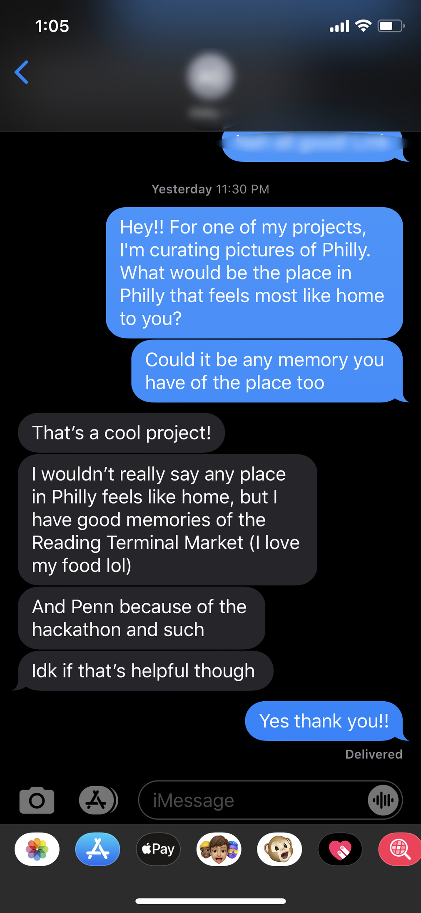

Revised Hifi Prototyping
Since I had a more emotional connect to the time lapse prototype going to college in a different country, I decided to further that.
I chose popular cities in US as home, New York, Boston, and Philadelphia for the relative ease of high res images. I will be adding more cities as I go. Since I'm not from any of these cities, I asked my friends from NYC, Boston and Philly to see what locations in the city they considered home. I collected images and wrote captions based on this data.


